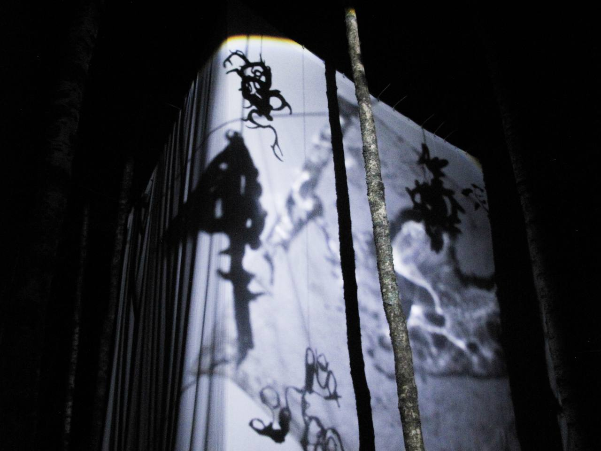
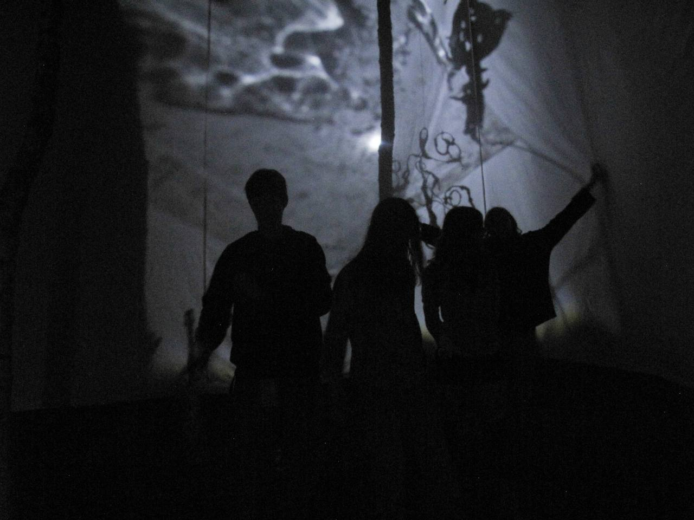

«театр света и звука» — ночная автономная инсталляция, основанная на идее теневого театра
и взаимодействующая со стихиями ветра и света.
театр намерен обратить посетителей в тишину, чтобы прислушаться к себе.
тишина — это пространство для мысли.

Размер объекта — 500 х 500 см
Инсталляция реализована для фестиваля ландшафтных объектов
«Архстояние 2024» в Никола-Ленивце.

команда:
Дарья Иванова,
Денис Лазарев,
Кристина-Серафима Мунтеану,
Михаил Палькин,
Вова Олейник,
Даша Рубиш
2024